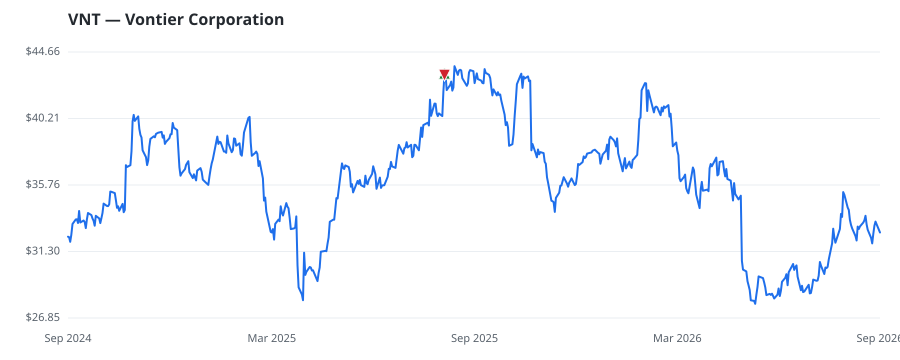

bullish · bearish · n/a — dots: price>SMA10 · SMA10>SMA50 · SMA50>SMA200 · up>down volume (20d)
Technology Hardware · mid cap
Members who bought VNT earned a dollar-weighted +0.0% from their disclosure dates, versus +0.0% for the S&P 500 over the same holding windows (+0.0% alpha).

▲ green = a disclosed purchase · ▼ red = a disclosed sale (plotted on disclosure date)
Vontier, spun off from Fortive in 2020, is an industrial technology company with a portfolio of transportation and mobility solutions. The company offers a wide array of products and services, including fueling equipment, sensors, point-of-sale and payment systems, telematics, and equipment used by vehicle mechanics and technicians. Vontier generated approximately $3.1 billion in sales in 2025. TOTALIZING FLUID METERS & COUNTING DEVICES · website
| Revenue | $3.1B | Net income | $406.1M |
|---|---|---|---|
| Operating income | $561.6M | Diluted EPS | $2.76 |
| Assets | $4.4B | Equity | $1.3B |
| Member | Chamber | Out-performer | Disclosed buys $ | Return on buys |
|---|---|---|---|---|
| Lisa McClain | house | — | $8K | +0.0% |
Disclosed $ figures are bracket midpoints — filings report ranges (e.g. $1,001–$15,000), not exact amounts.